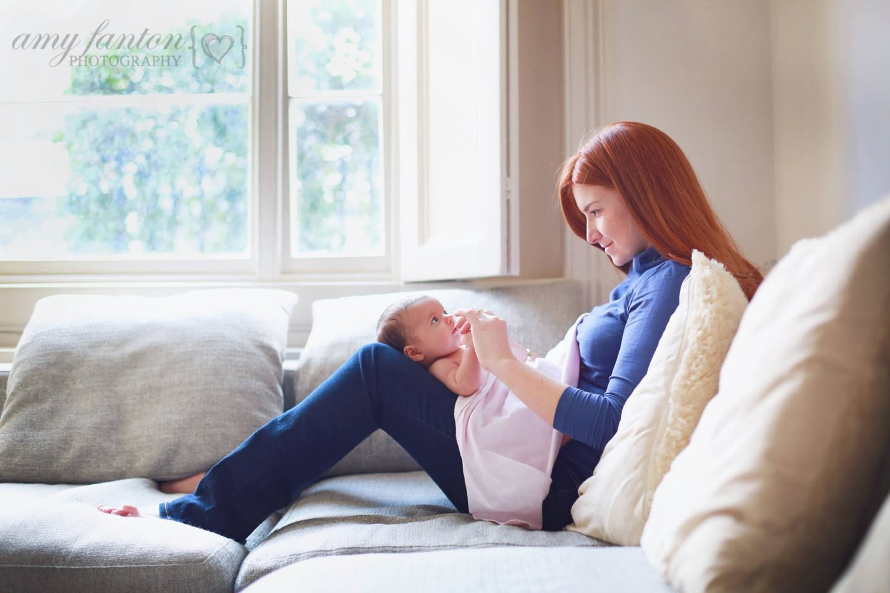
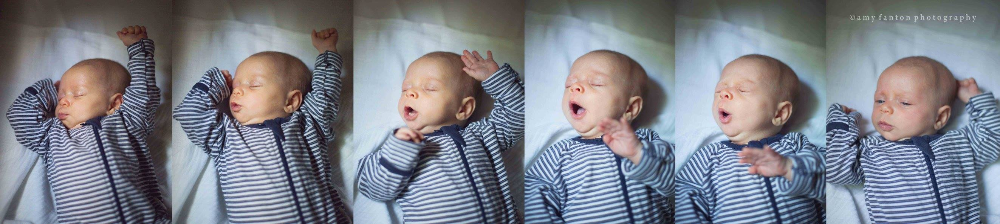
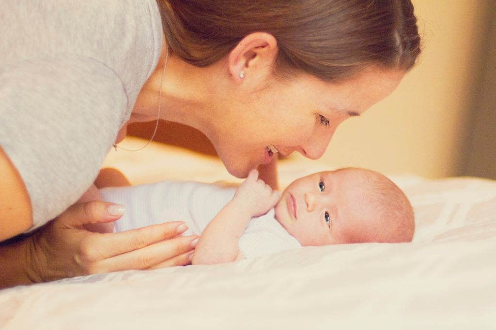
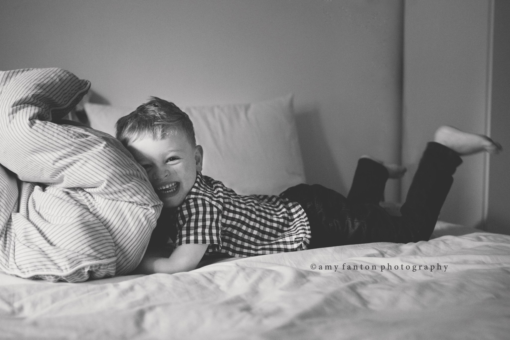
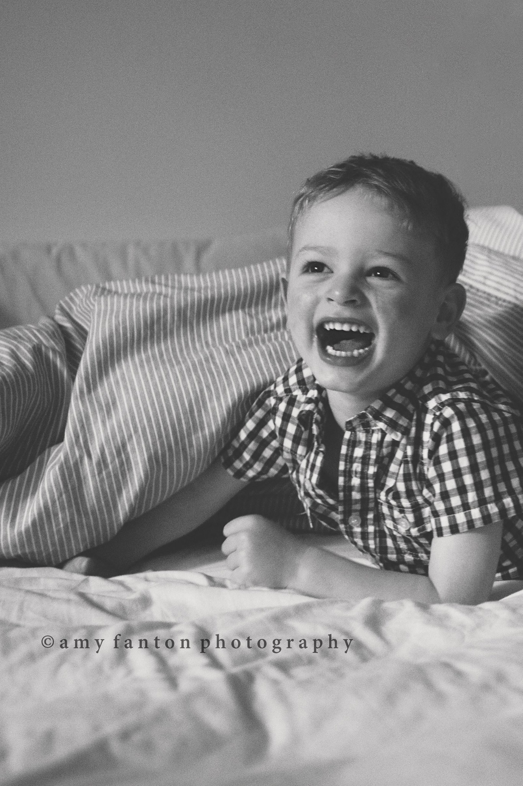
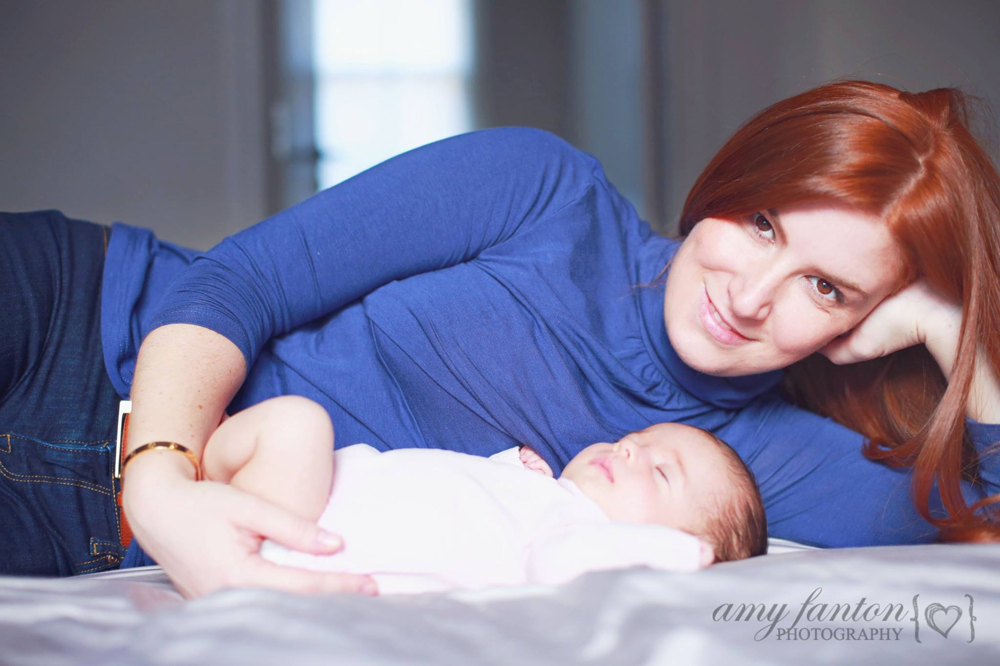

Newborn & Maternity
London Indoor Newborn Photo Session
18 February 2014

I am so in love with the images from this shoot I don’t even have the words. The adorable baby, the way momma’s red hair is set off by the blues and the pinks, the gorgeous window light–Gaaaaah. I can’t wait until this little one is a few months older so i can get poppa and and big brother in the photos as well! It was really hard choosing which ones to feature on here, but without further ado here are my favs:






